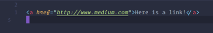

een element bestaat uit een openings- en een sluitings tag. alles wat tussen de tags staan zal op de website getoond worden op de manier waarop de tags bedoeld zijn.
de browser leest jouw HTML code om te kijken wat hij precies moet laten zien en op welke manier.
dat zijn html, head, body, p en h1-h6
het a (anchor) element zorgt ervoor dat je naar andere links toe kan. dat betekent dus dat je naar andere tabladen toe kan van bijvoorbeeld een andere website. met het href attribuut kan je er een link invoegen.
de IMG-tag zorgt ervoor dat er een afbeelding getoond word op de website. een img-tag heeft altijd een src en een alt attribuut. het src attribuut gaat altijd opzoek naar de foto die jij in de code hebt gezet. het alt attribuut zorgt ervoor dat als jouw website gelezen word voor bijvoorbeeld blinde mensen dat ze wel weten waar de afbeelding over gaan. ook het handige van de IMG-tag is dat hij niet per see een openings- EN een sluitingstag nodig heeft.